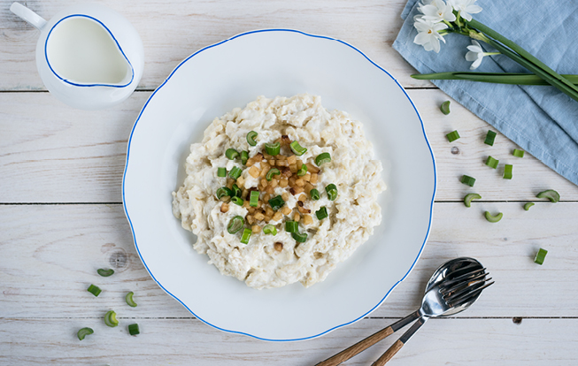

Potato Dumplings - Bryndzové Halušky

Potato dumplings, also known as Bryndzové Halušky or "Bryndzáky" in local slang,
are a well known Slovak dish, made up of Potato dumplings, fried bacon squares and sheep cheese "Bryndza."
Time: 45 minutes
Equipment:
- shredder
- strainer with a straining brush
Ingredients:
- 500g of potatoes
- 250g of smooth wheat flour
- 200g of bryndza
- 200g of sour cream(18%)
- 150g of bacon
- spring onions
- 1 egg
- salt
Steps:
- Wash the potatoes,and shred them until fine.
- Add the potatoes, flour and egg into a bowl, mix thoroughly.
- Boil water in a medium to large pot, then add salt.
- Through a strainer and a strainer brush, we "push" out our Dumplings.
- Mix thoroughly, so the dumplings don't stick.
- We cook our dumplings, until they float on the surface of water.
- We dice our bacon and either fry or bake it, until crispy.
- In a bigger bowl, mix the bryndza and sour cream.
- We add our dumplings to the bryndza-sour-cream bowl and gently mix.
Serving: We serve the dumplings with bacon and spring onions sprinkled on top.
back to main page